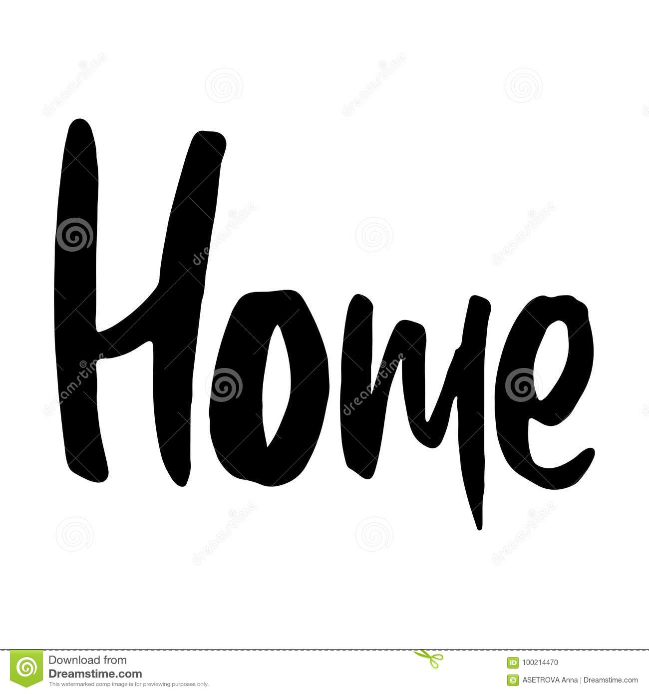

about me
Goals
Opinion
My name is milka mulugeta. I am a fresh student at university. Everyone can agree that I am a good student and that I like to study. My favorite subjects are maths and physics . I have enterd EiABC university because my goal is to study Architecture in future and to become a respected professional in the fields.
I can say that I am a responsible and a hard-working student. Moreover, being a sociable person, I have many friends since I like to communicate with people and get to know new interesting individuals. I enjoy my time at school: it is really nice to study, the students are very friendly and ready to help. The atmosphere cannot but make me want to go there every time. I like to receive and deal with challenging tasks. I am a very enthusiastic student and I think this is a strong point of mine.
My friends say that I am a very funny and an interesting girl with a good sense of humor. As soon as I meet new people who are happy to meet me, I feel extremely comfortable with them. I believe that friendship is one of the most important values in human life. We exchange new ideas, find many interesting things about each other and experience new things. I appreciate friendship and people who surround me.
Meeting new people who support all my efforts to grow and develop my skills not only in the subjects but also in my hobbies gives me a lot of energy. Many of those friends who surround me now I met on the street while doing my hobby. I’m in love with photography, so the thing I love doing so much became even more enjoyable. I decided to take beautiful pictures of accidental people and share these photos with them by emails or in social media. I feel happiness inside seeing how happy they are looking at the pictures where they are walking or sitting somewhere in the park. In this way, Liza became my best friend and we both believe that we meant to meet because she studies the same classes and we have similar life goals.